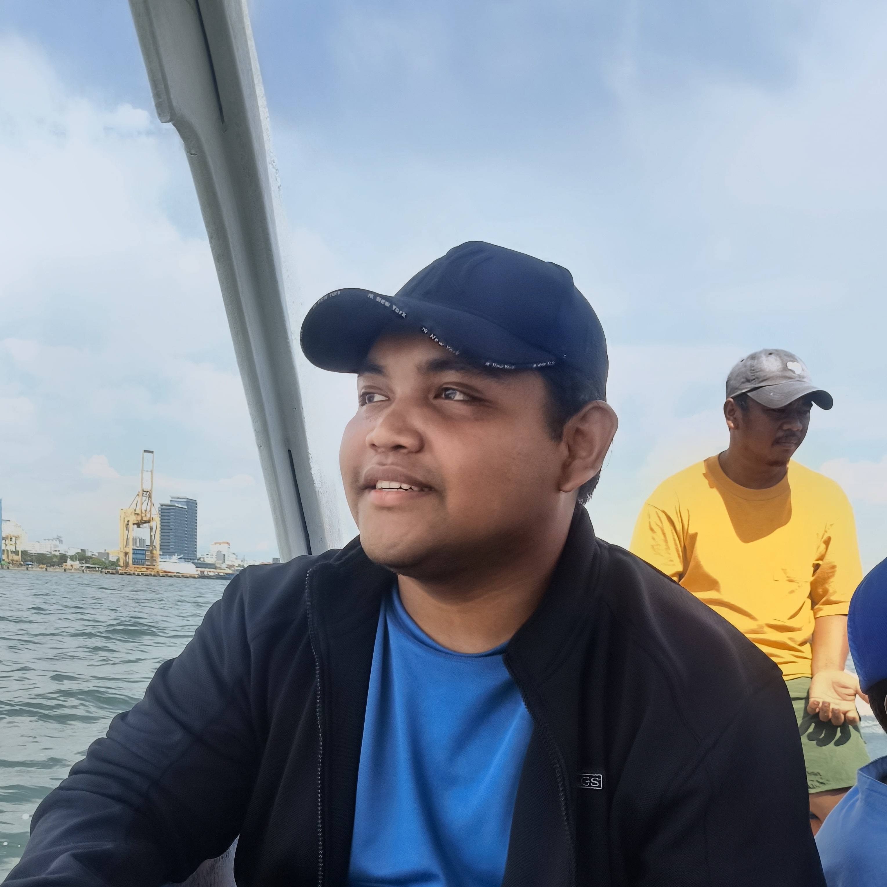
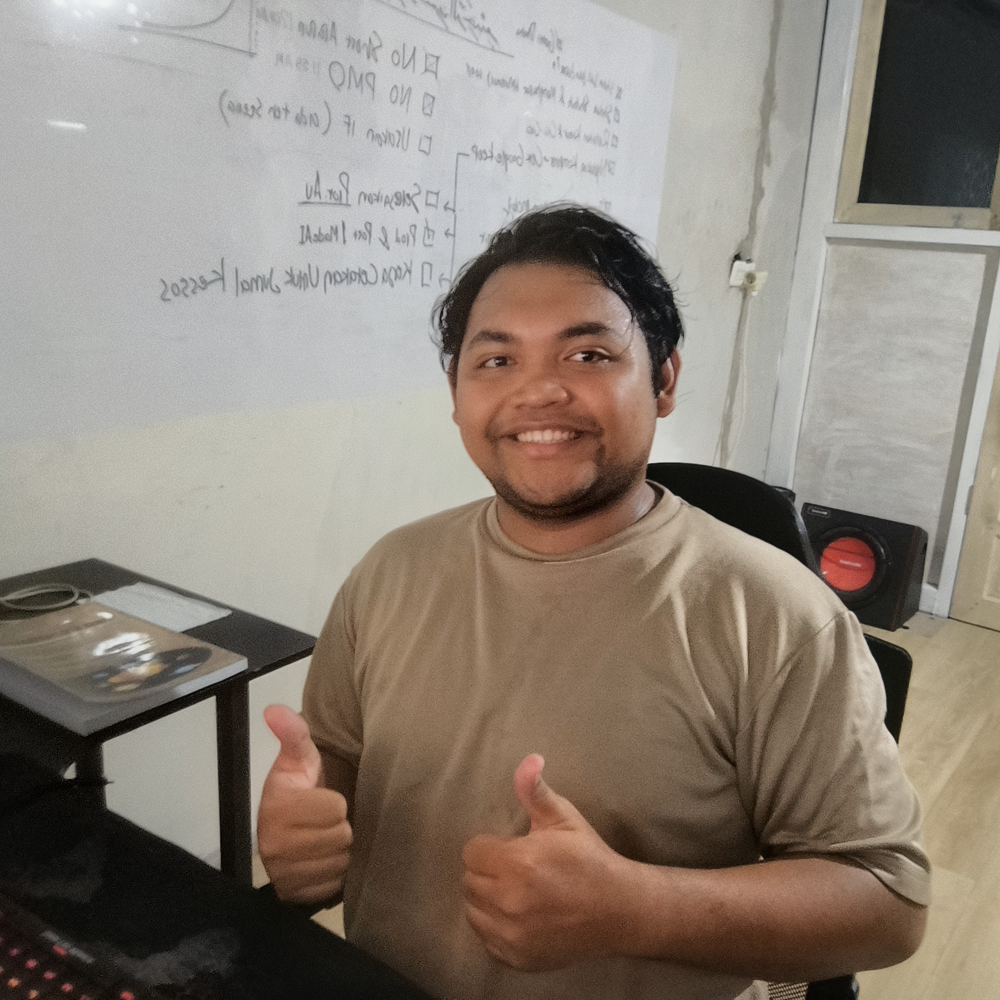
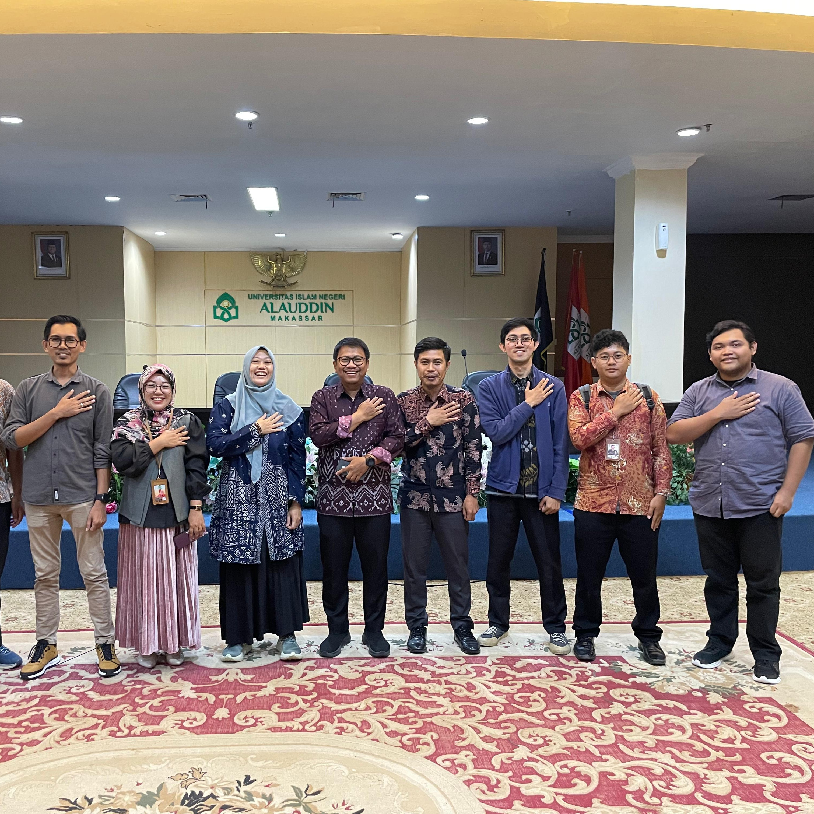
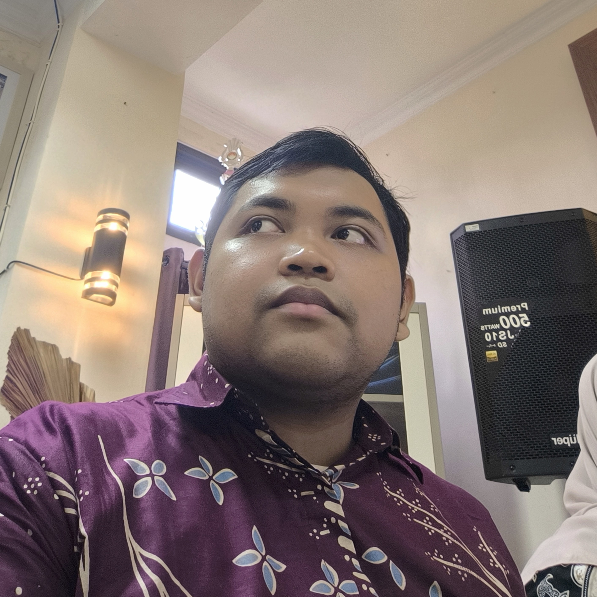
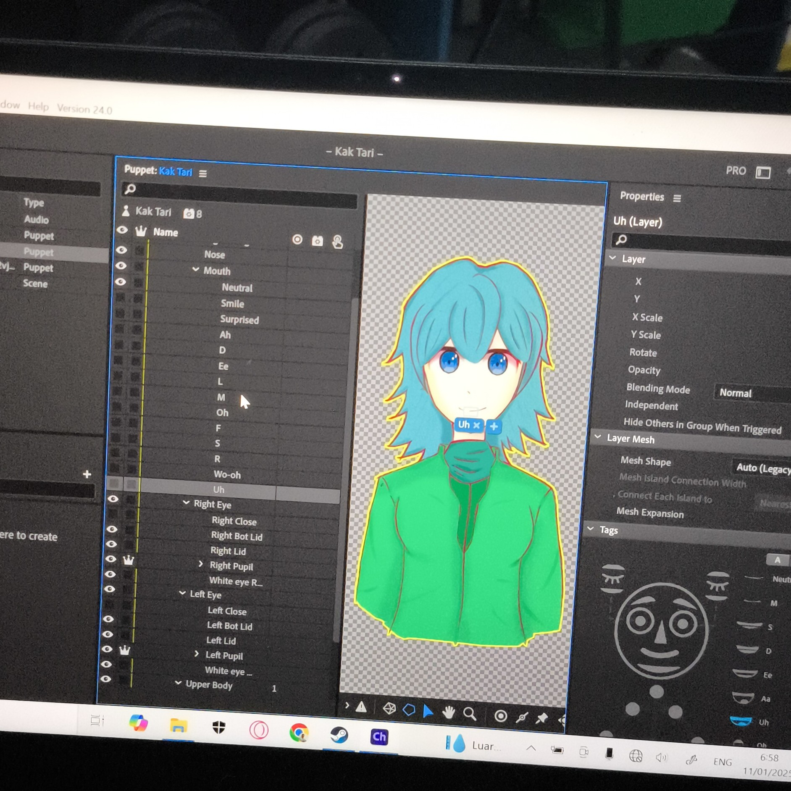
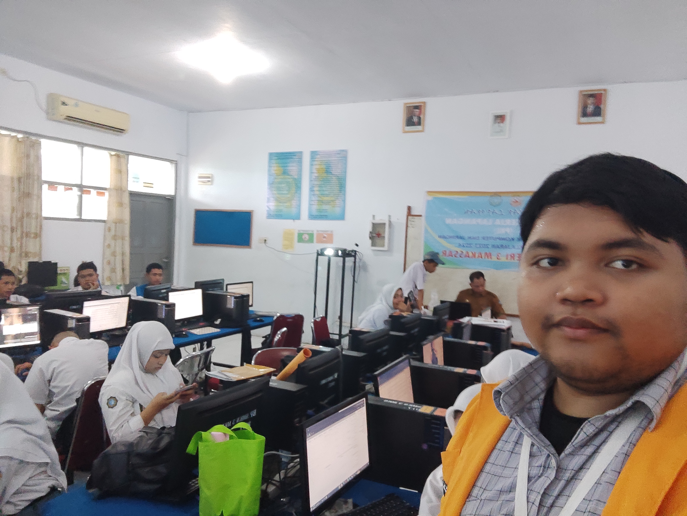
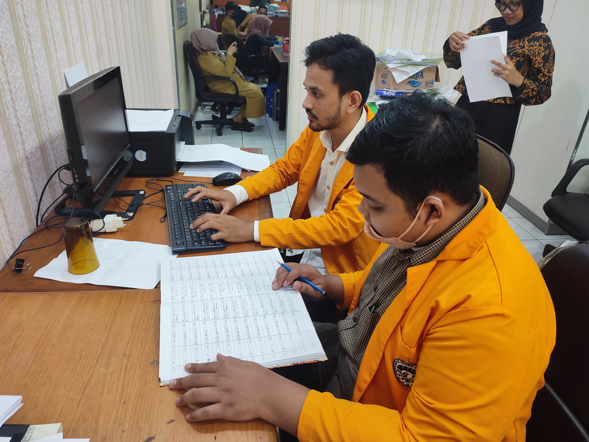
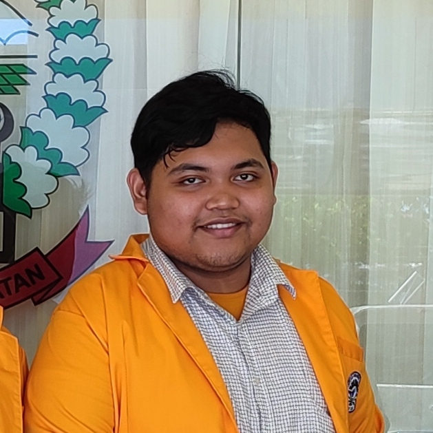
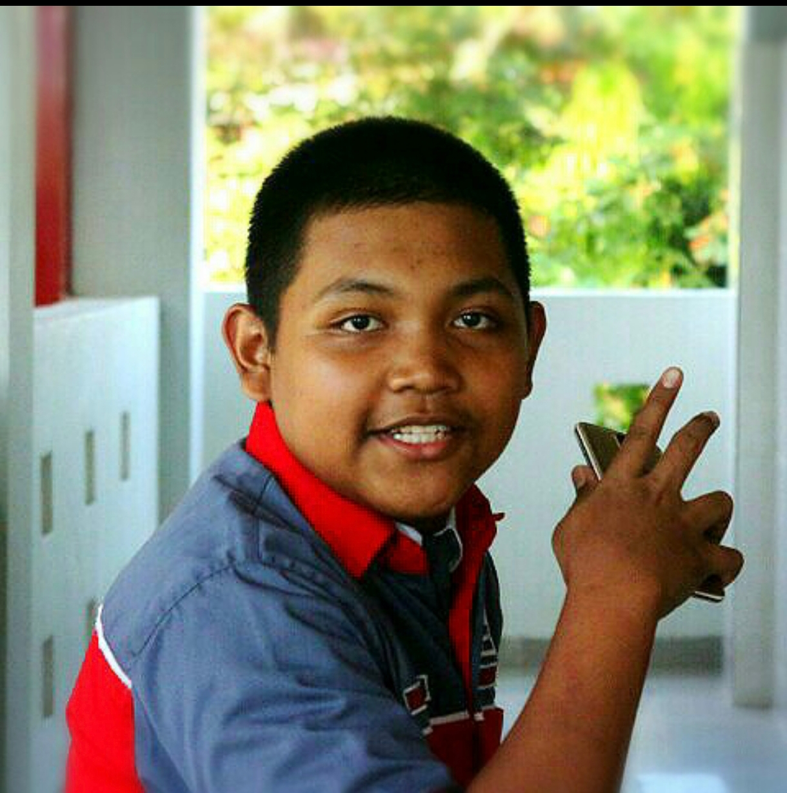

Halo, Saya Ariel Usman
Content Creator, Programmer, & Polymath
Saya senang mengeksplorasi ilmu baru secara mandiri. Mulai dari membangun aplikasi interaktif mini hingga menyelami teori sosiologi-politik. Proyek-proyek di halaman ini adalah bentuk komitmen saya dalam menuangkan riset ke dalam wujud visual yang mudah dinikmati siapapun.
Riwayat Hidup & Biografi
Ariel Rifky Cahyadi Usman atau akrab dipanggil Ariel Usman, lahir di Makassar pada tanggal 29 Mei 2002. Ariel merupakan anak kedua dari 2 bersaudara, lahir dari pasangan akademisi Dr. Usman, S.Ag., M.Ag. dan Dr. Syamsidar, S.Ag., M.Ag.
Ariel memulai perjalanan pendidikan formalnya pada tahun 2007 di SD Inpres BTN IKIP 1 Makassar (selesai tahun 2013). Minat akademis dan rasa ingin tahunya berlanjut ke SMP Negeri 33 Makassar (selesai tahun 2016). Pada tahun yang sama, ia memilih jalur kejuruan teknologi dengan masuk ke SMK TELKOM Makassar (jurusan teknik komputer dan jaringan, lulus pada tahun 2019).
Melanjutkan kecintaannya pada dunia komputasi dan edukasi, di tahun 2019 Ariel menempuh pendidikan tinggi jenjang Strata-1 di Universitas Negeri Makassar (UNM), Fakultas Teknik, Jurusan Teknik Informatika dan Komputer, dengan program studi Pendidikan Teknik Informatika dan Komputer (PTIK).
Perjalanan Karir & Magang
Dokumentasi portofolio profesional dan riwayat kerja nyata Ariel Usman.
Pengalaman Kerja

Januari 2026 - SekarangFreelance Photographer
Makassar | Freelance
Fokus pada street photography, serta mengabadikan berbagai acara kasual seperti wisuda kelulusan dan dokumentasi perjalanan grup maupun keluarga dengan gaya visual yang natural.

Mei 2024 - SekarangGraphic Designer
TK Adilika Makassar | Freelance
Bertanggung jawab membuat desain media pembelajaran, poster, spanduk sekolah, dan kartu nama secara rutin setiap awal tahun ajaran baru dan pergantian semester.

Januari 2026 - Agustus 2026Assistant Website Manager
KPM FDK & Jurnal Mimbar Kesejahteraan Sosial | Freelance
Membantu merancang dan memelihara website jurnal ilmiah yang diserahkan ke dosen pengelola website jurnal.

September 2025 - Desember 2025IT Support
Jurusan Kessos UINAM | Freelance
Membantu memelihara sistem IT lokal dan mengarsipkan berkas-berkas penting untuk persiapan akreditasi Jurusan Kesejahteraan Sosial UIN Alauddin Makassar.

Februari 2020 - Juli 2020Content Creator
1cak.com | Freelance (Online)
Mengelola kanal hiburan 1cak.com/of-mr_garbage, merancang komik strip visual berseri "Bu Guru Pain", menggambar karakter PNGTuber, dan memoderasi interaksi komunitas digital.
Pengalaman Magang

September 2023 - November 2023Asisten Guru (Tenaga Pendidik)
SMKN 2 Makassar
Mengajar mata pelajaran kejuruan produktif Teknik Komputer & Jaringan (TKJ), melatih manajemen kelas siswa, dan menyusun administrasi guru kurikulum.

Juli 2022 - September 2022Staf Administrasi & IT Support
Sekretariat DPRD Provinsi Sulsel
Membantu dukungan administratif perkantoran birokrasi, mengelola database arsip, mendokumentasikan agenda, serta menangani pemeliharaan perangkat lunak/keras komputer kantor.
 Juli
2018 - September 2018
Juli
2018 - September 2018
Teknisi Lapangan & Help Desk
PT Telkom Akses Makassar
Praktek lapangan telekomunikasi menangani instalasi serat optik Indihome, troubleshooting jaringan, serta membantu operasional unit Help Desk.
Kombinasi Keahlian
Web Development
Membangun single-page aplikasi interaktif, simulator dinamis, dan dashboard modern murni di sisi klien.
2D Animation & Body Mechanics
Fokus pada penerapan 12 prinsip animasi dasar, kontrol pergerakan fisik (Body Mechanics), dan pergerakan halus (Fluidity) untuk stiker digital/GIF.
Creative Graphic Design
Merancang materi komunikasi visual komersial (F&B) dengan manipulasi foto berani, serta tata letak desain korporat yang formal dan rapi.
Meme Account Management
Mengelola akun Mr. Garbage dan merancang meme/komik strip untuk membangun engagement interaksi tinggi dengan audiens internet culture.
Video Editing & PNGTuber Assets
Siklus lengkap produksi video edukatif/hiburan 'Faceless Channel' menggunakan model avatar buatan sendiri dan teknik retensi penonton tinggi.
Multimedia Generalist
Eksplorasi lintas media visual mulai dari pixel art retro, flat design minimalis, hingga fotografi arsitektur perkotaan.
Sertifikat & Kredensial
Ariel terus meningkatkan standar keahliannya melalui berbagai program pelatihan dan sertifikasi terverifikasi. Beberapa kredensial utama meliputi:
AI & Otomasi Profesional
Sertifikasi AI & Automation, Python Programming (Google), dan Vibe Coding.
Canva & Desain Kreatif
Sertifikat Resmi Canva Academy (Kampanye Kreatif & Konten Memikat) dan Digital Illustration.
Office & Excel Specialist
Spesialisasi Sales Dashboard & Analytics di Microsoft Excel.
Pendidikan & Praktek Lapangan
Becoming a Teacher Certified, serta Praktek Kerja Lapangan Sekretariat DPRD.
Galeri Aktivitas
Beberapa dokumentasi visual dan cuplikan aktivitas harian Ariel Usman dalam berkarya, berdiskusi, dan mengembangkan konten digital.



Lihat Portofolio Lengkap
Semua proyek web murni, simulator interaktif, dan galeri desain kreatif saya tersedia di dashboard utama.